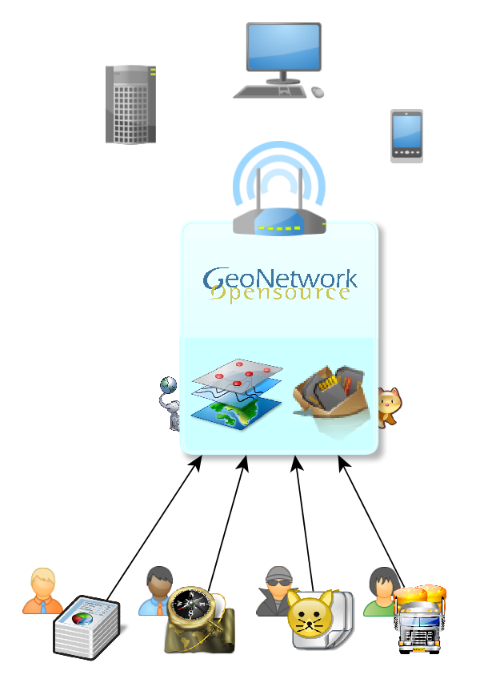
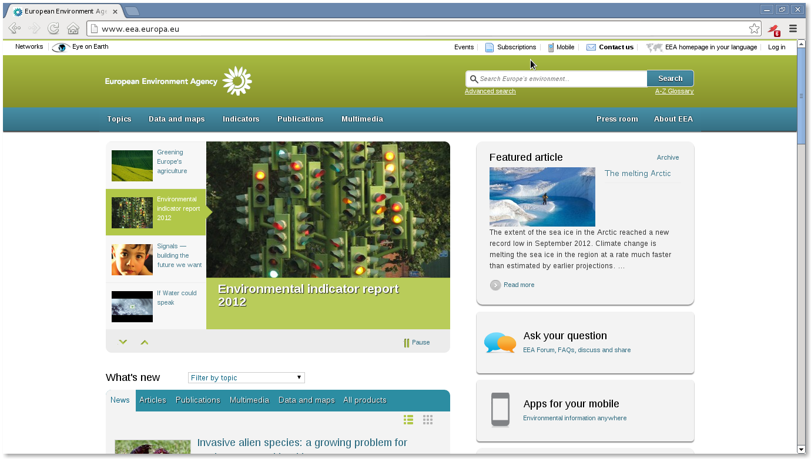
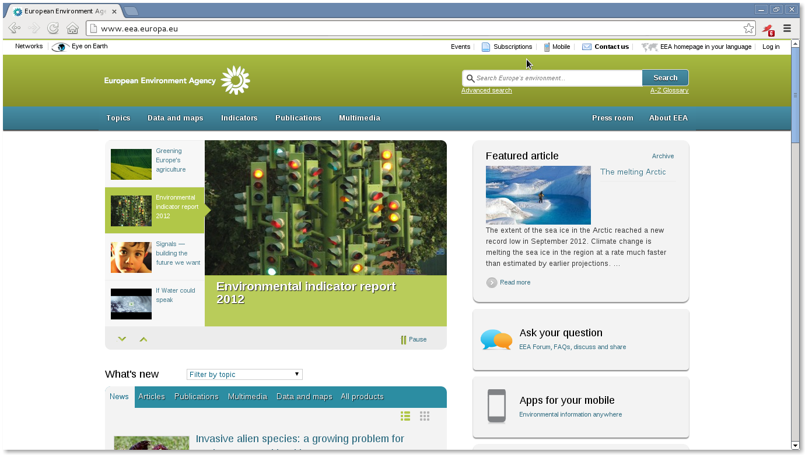

Your browser doesn't support the features required by impress.js, so you are presented with a simplified version of this presentation.
For the best experience please use the latest Chrome, Safari or Firefox browser.
Tutorial práctico:
"Cómo tener tu propio catálogo de metadatos en 30 minutos"
María Arias de Reyna @delawen
José García
- Visión General
- Instalación
- Cambiando de Estilo
- Introduciendo Datos
- Tu propio catálogo de metadatos
Visión General

-
- Instalación
- Cambiando de Estilo
- Introduciendo Datos
- Tu propio catálogo de metadatos
Instalación
Por simplificar, usaremos Linux
(de todas formas otro SO no sería serio)
Necesitamos:
- Un ordenador con Linux (ejem. Debian)
- Internet
- Java (mvn)
- Postgresql (opcional)
- 27 minutos
Instalación
Para valientes:
$ git clone --recursive git://github.com/geonetwork/core-geonetwork.git master
$ cd master
$ git checkout master
$ git submodule update --init
$ mvn clean install
Para conservadores:
Sourceforge
Instalación
Configuremos un poco:
En ./web/src/main/webapp/WEB-INF/config.xml seleccionamos la base de datos adecuada
Instalación
Configuremos un poco:
En ./web/src/main/webapp/WEB-INF/config.xml seleccionamos la base de datos adecuada
Ya está.
Arrancamos con maven jetty (rápido)
cd web; mvn jetty:run
-
-
- Cambiando de Estilo
- Introduciendo Datos
- Tu propio catálogo de metadatos
Cambiando el estilo
geoNetwork tiene dos estilos por defecto: clásico y widgets
mvn jetty:run -Pwidgets
O bien podríamos introducir un estilo propio gracias a los widgets
(que obviamente no da tiempo a desarrollar en 16 minutos)
 

-
-
-
- Introduciendo Datos
- Tu propio catálogo de metadatos
Introduciendo Datos
porque un portal sin datos no es nada
Varias formas:
- Introducir mediante el editor
- Importar desde fichero (XML)
- Harvesting
Existen muchas fuentes de harvesting
-
-
-
-
- Tu propio catálogo de metadatos
Tu propio catálogo de metadatos
Hasta aquí hemos llegado
Pero este no es el final, es sólo el principio. GeoNetwork es sólo la base sobre la que construir.
- Admite más widgets (gráficas, estadísticas,...)
- Colaborativo (división por roles y grupos de trabajo)
- Preparado para Minería de Datos (Lucene)
- ... o lo que se os ocurra
Gracias por vuestra atención
¿Dudas, preguntas?
Os estaremos esperando en


@geocat_bv